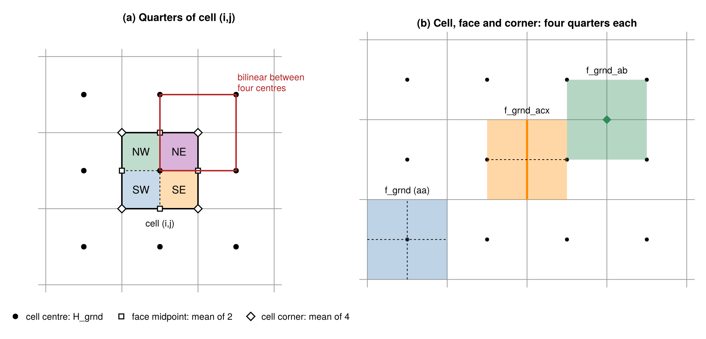
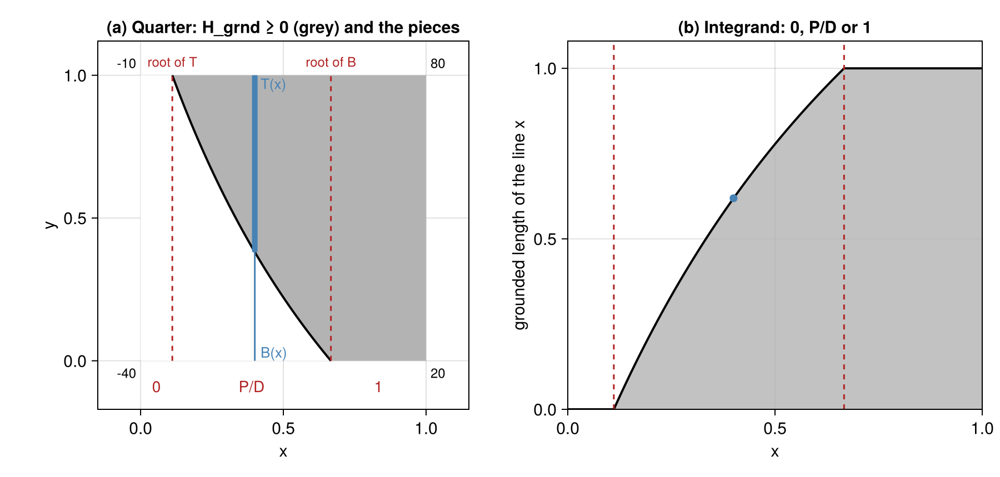
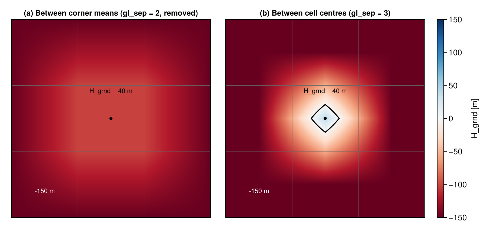

Grounded fraction
The grounded fraction f_\mathrm{grnd} \in [0,1] is the part of a cell where the ice rests on the bed. It is defined on the cells (f_grnd), on the velocity faces (f_grnd_acx, f_grnd_acy) and on the cell corners (f_grnd_ab). It sets where the basal friction acts (\beta = 0 where f_\mathrm{grnd} = 0, and the friction at grounding-line cells and faces through ydyn.beta_gl_scale and beta_gl_stag, see Basal friction), which faces are grounded or floating in the SSA masks, and how the basal mass balance is split between the grounded and the floating part of a cell (ytopo.bmb_gl_method, see Mass conservation).
The grounded fraction follows from the flotation thickness H_grnd (calc_H_grnd): the ice thickness minus the thickness that would float in the water column, H - (\rho_\mathrm{sw}/\rho_i)(z_\mathrm{sl} - z_b), where the bed is below sea level, and the ice thickness plus the bed elevation above sea level elsewhere. Ice is grounded where H_\mathrm{grnd} \ge 0.
Methods
ytopo.gl_sep selects how f_\mathrm{grnd} is computed:
gl_sep |
Cells (f_grnd) |
Faces (f_grnd_acx, f_grnd_acy) |
|---|---|---|
| 1 (default) | 1 where H_\mathrm{grnd} \ge 0, 0 elsewhere | fraction of the distance between the two cell centres where H_\mathrm{grnd}, interpolated linearly, is \ge 0 |
| 3 | grounded area of H_\mathrm{grnd} interpolated bilinearly between cell centres (below) | grounded area of the face’s control volume, same interpolant |
The grounded fraction used for the basal mass balance (f_grnd_bmb) is the gl_sep = 3 area for every gl_sep. gl_sep = 2 has been removed (see below); a parameter file with gl_sep = 2 stops in ytopo_par_load.
Subgrid interpolation (gl_sep = 3)

H_\mathrm{grnd} is interpolated bilinearly between the cell centres (as in CISM, Leguy et al., 2021). Each cell is split into four quarters (SW, SE, NW, NE). A quarter lies within one square between four cell centres, so the interpolant is bilinear on the quarter, with nodes
- the cell centre: H_\mathrm{grnd}(i,j),
- the two face midpoints: the mean of the two centres on either side of the face,
- the cell corner: the mean of the four centres around it.
The grounded area of each quarter is computed once (bilinear_grounded_fraction, below). The fraction of a cell is the mean over its four quarters, that of an acx face the mean over the two east quarters of cell i and the two west quarters of cell i+1 (the face’s control volume), likewise for acy faces, and that of a corner the mean over the four quarters around it (calc_f_grnd_subgrid_area).
Since the interpolant passes through the cell-centre value, a cell with H_\mathrm{grnd} \ge 0 at its centre always has f_\mathrm{grnd} > 0, also where all its neighbours float.
Grounded area of a quarter

Mapped to the unit square, the interpolant on a quarter is
h(x,y) = h_{00}(1-x)(1-y) + h_{10}\,x(1-y) + h_{01}(1-x)\,y + h_{11}\,xy ,
with the node values h_{00}, h_{10}, h_{01}, h_{11} at the corners (0,0), (1,0), (0,1), (1,1). On each vertical line x = \text{const}, h is linear in y, from the bottom edge value B(x) = h(x,0) to the top edge value T(x) = h(x,1). The grounded length of the line (h \ge 0) is therefore
\ell(x) = \begin{cases} 1 & B \ge 0,\ T \ge 0 \\ 0 & B < 0,\ T < 0 \\ P/D & \text{otherwise}, \quad P = \max(B,T),\ D = |B - T| , \end{cases}
and the grounded fraction of the quarter is \int_0^1 \ell(x)\,dx. B and T are linear in x, so \ell changes form only at their roots: these split [0,1] into at most three pieces, on each of which \ell is 0, 1, or the ratio of two linear functions. On such a mixed piece of length w, with P = P_a + P_s t and D = D_a + D_s t (0 \le t \le w, and D > 0 inside the piece),
\int_0^w \frac{P_a + P_s t}{D_a + D_s t}\,dt = \frac{w}{D_a}\left[P_a\,\psi(z) + P_s\,w\,\chi(z)\right], \qquad z = \frac{D_s w}{D_a},
\psi(z) = \frac{\ln(1+z)}{z}, \qquad \chi(z) = \frac{z - \ln(1+z)}{z^2} .
The integral is taken from the end of the piece where D is larger, so that -1 \le z \le 0. For |z| < 10^{-4}, \psi and \chi are evaluated from their Taylor series (\psi = 1 - z/2 + z^2/3, \chi = 1/2 - z/3 + z^2/4), so that z \to 0 (e.g. a straight grounding line, where h is linear and D_s = 0) needs no special treatment: the result is then the mean of P/D over the piece. z = -1 means D = 0 at the far end of the piece, which inside a mixed piece requires B = T = 0 there. P and D then have a common root, and P/D = P_s/D_s is constant on the piece; this is the degenerate saddle where two straight zero lines of h cross.
The result is exact for the bilinear interpolant, independent of the orientation of the quarter (it is the same for all rotations and reflections of the square), and counts H_\mathrm{grnd} = 0 as grounded, as gl_sep = 1 does. tests/test_f_grnd.f90 (make f_grnd) checks it against analytical values (linear fields, the hyperbola xy = 1/4, exact saddles), the symmetries of the square, and dense sampling of the interpolant (fesm-utils calc_subgrid_array_quad, also used for the grounding-zone melt of bmb_gl_method = "pmpt").
Difference from the CISM implementation
The interpolant, the quarters and the averaging to cells, faces and corners are those of Leguy et al. (2021), as implemented in CISM. Until this change, Yelmo used a port of the IMAU-ICE version of the CISM routine (determine_grounded_fractions). Only the area of a quarter is computed differently.
CISM writes the bilinear function as h = a + bx + cy + dxy and rotates the quarter until its sign pattern is one of four cases: one corner grounded, three corners grounded, two adjacent corners grounded, or two diagonal corners grounded. Each case has a closed-form area, e.g. for one grounded corner
\frac{(bc - ad)\ln\left|1 - \dfrac{ad}{bc}\right| + ad}{d^2} .
These expressions are 0/0 as d \to 0, i.e. wherever H_\mathrm{grnd} is locally planar (on a quarter, d = 0 exactly when the cross difference of the neighbouring centre values vanishes, e.g. along a straight grounding line), and at the degenerate saddle (bc = ad). The ported code therefore
- moved corner values within 10^{-4} of zero to \pm 10^{-4}, and zero to +10^{-4}, i.e. floating;
- shifted one corner by 0.1 (in m of H_\mathrm{grnd}) when |d| < 10^{-4};
- had a separate formula for a grounding line parallel to an axis;
- stopped the model (
error stop) when the area was NaN or outside [0,1]. This happened for an exact saddle, e.g. H_\mathrm{grnd} = 1, -3, -3, 9 m on a 2 × 2 block of cells (more likely in idealised setups with round numbers).
Yelmo instead sorts the quarter by the roots of the two edge lines B and T, not by the signs of its corners. One formula covers all sign patterns. Small d needs no perturbation: it enters through z, which \psi and \chi handle by their series. The only special case is the exact common root of P and D, where the integrand is constant. On a GRL-16KM state, the two methods differ by at most 1.05 \times 10^{-4} in f_\mathrm{grnd} (from the perturbations above); exact saddles no longer stop the model, and H_\mathrm{grnd} = 0 counts as grounded. The code is about 190 lines, against about 430 for the port.
gl_sep = 2 (removed)

gl_sep = 2, H_\mathrm{grnd} is negative everywhere in the cell, so f_\mathrm{grnd} = 0. (b) Interpolated between the cell centres (gl_sep = 3), the cell keeps a grounded patch (black: H_\mathrm{grnd} =
0).gl_sep = 2 sampled the grounded area of a bilinear interpolant between the four cell-corner means of H_\mathrm{grnd} only, and set the face fractions to the mean of the two cells. The corner means smooth out the cell’s own value: a cell grounded at its centre next to deep ocean, e.g. ice on a small coastal island, had f_\mathrm{grnd} = 0, so no basal friction, while its surface elevation was that of grounded ice. In a GRL-16KM ISMIP7 spin-up such cells were driven at up to 21 km/yr. gl_sep = 3 uses the same kind of subgrid area, but with the interpolant that passes through the cell-centre values.
The figures are made with analysis/grounded-fraction/gf_schematics.jl.
References
- Leguy, G. R., Lipscomb, W. H., and Asay-Davis, X. S. (2021). Marine ice sheet experiments with the Community Ice Sheet Model. The Cryosphere, 15, 3229–3253.